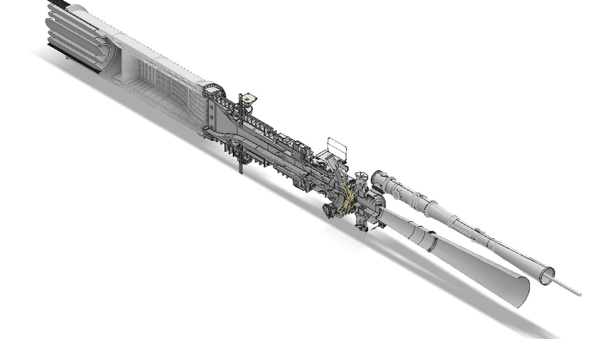
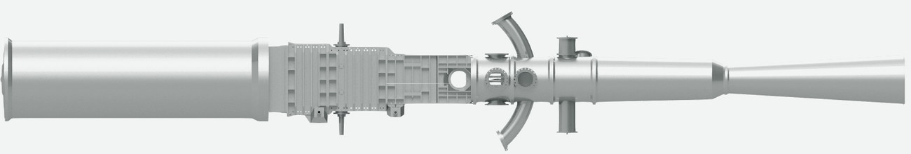
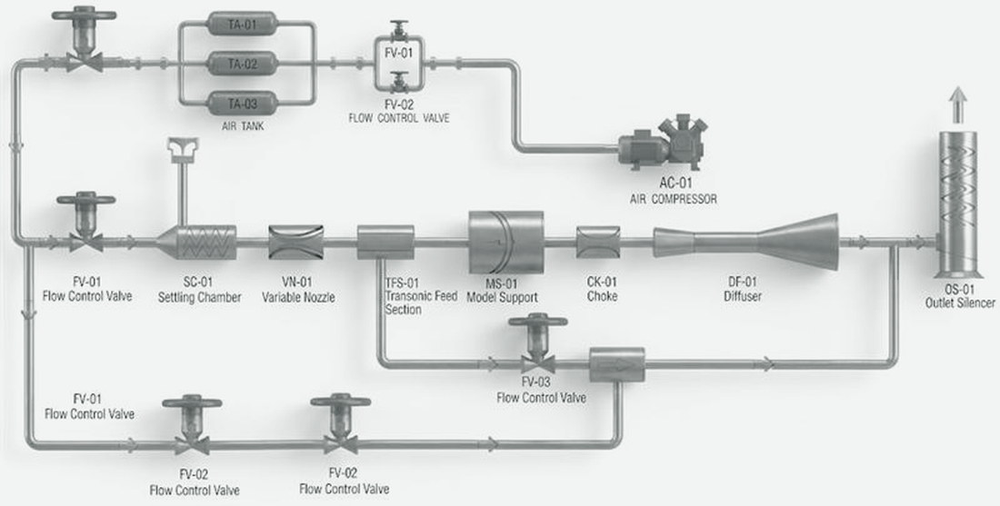

드래그 회전 · Ctrl/⌘+휠 확대 · 클릭 선택
3D 모형 불러오는 중



Unit 2.1
삼중음속 풍동
Trisonic Wind Tunnel
아음속·천음속·초음속의 삼중 속도 영역을 모사합니다. 가변 노즐 실시간 제어로 마하수를 연속 가변하며, 압력·힘·진동 등 주요 공력 데이터를 획득합니다.
설비 사양
- Mach
- 0.5 – 3 급 이상
- Test Section
- 500 × 500 mm
- Run Time
- ~ 60 초
- Mass Flow
- 60 – 200 kg/s
- Overall Length
- 약 27,450 mm
구성 부위 클릭하면 모형에서 강조